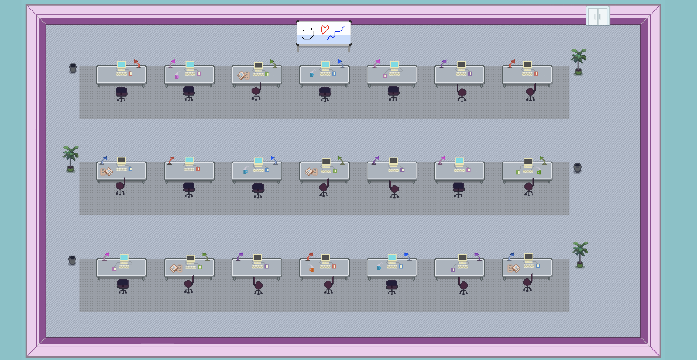
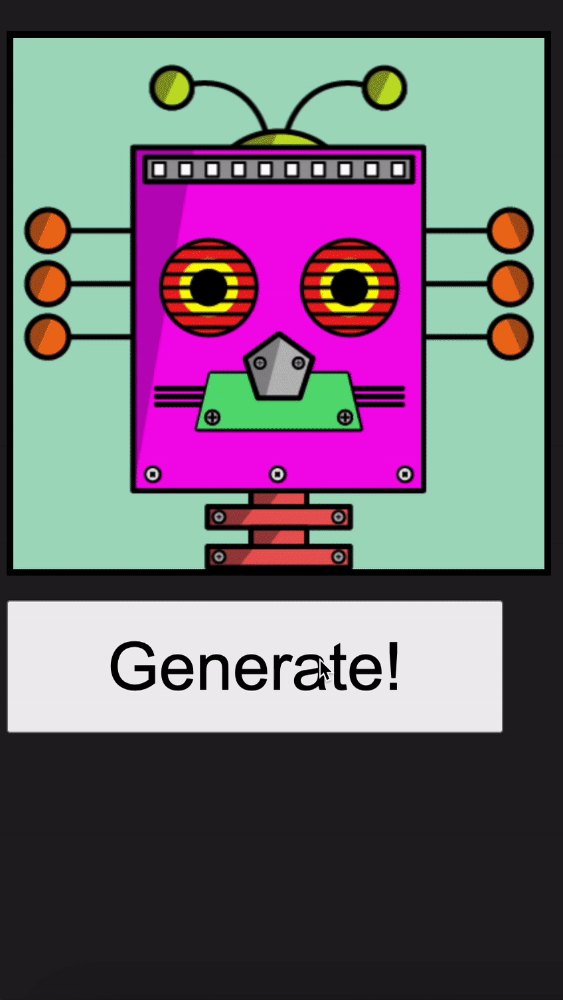

1 · Overview
Collaborative Artware is an experimental online drawing application created with other Media Arts and Design students at the University of Chicago. The project explored how a website could be both functional and experimental while encouraging creativity, connection, and play among people online.
2 · Guiding what-if
What if we could create a collaborative art experience that brings people together while allowing each participant to remain anonymous?
3 · Experience
Create an identity
Select or generate an avatar to enter the collaborative space.
Make a brush
Draw independently, then save an image to use as a custom brush.
Collaborate
Bring the brush to the shared board, where participants can draw and experience music together.
4 · Contribution and implementation
I contributed to the project’s creative direction, with a particular focus on designing and incorporating music into the shared experience. This was my first exploration of music on the internet as part of an interactive artwork.
I developed a way for participants to share YouTube music so that uploading, pausing, or resuming media would be reflected for other people in the collaborative space.
Different browsers process audio differently, which made shared playback difficult. The project used YouTube media and YTsampler as an approach to synchronized music playback. The website was built with HTML, CSS, and JavaScript.
5 · Demo



